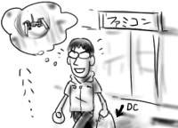
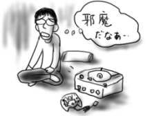
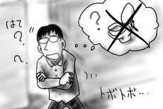

ここしばらく、哲から、XBOXの「ファントムクラッシュ」を勧められており、僕としてもかなり惹かれる物を感じたのでXBOX購入計画を立てました。惹かれたのは、200曲近いインディーズ楽曲をゲーム内のCD屋で自由に買い漁れる点や、ギブスン、攻殻機動隊、横山宏など、引用の全てがあまりに隠しだてされてないあたりです。せめて名詞を変えるくらいはやろうよというツッコミがまかり通る辺りが逆に清々しいです。
というわけでここ数日はXBOXソフト販売予定リストなどを眺めて盛り上がっていたのですが、今日ゲーム屋から出て来た僕はほくほくとドリームキャストを抱えていました。
理由は何だ！これ(link)だ！こうなったら、もう、仕方ないじゃない…(俯きながら)。手段を問わず、とっくに生産終了したドリームキャストを確保するほかありません。
もう中古屋ですら手に入らないよ、と脅されていたのですが、いざ近所のゲーム屋に足を運んでみるとあっさりと中古棚で見つけることが出来ました。邪魔な箱や説明書がなくて300円引きという理想の形態で売られていたので即購入でした。

ついでに斑鳩までの繋ぎになりそうなゲームを買おうと思ったのですが、どうも適切な値段でぴんと来る物がなかったので、何もゲームは買わずに帰って来ました。家でドリームキャストのゲームを検索してみたのですが、びっくりするくらい、これだ！というゲームがないのでした。そりゃ…製造中止になるよね…。というか、何かあったらとっくに買ってたはずだった。
僕のドリームキャストは斑鳩専用機として命を全うしそうです。その前にスティックを用意しておかなくちゃ！予約もしておかなくちゃ！というわけで、今のところ僕のドリームキャストはとっても邪魔な四角い白い箱です。

一週間のツケがまわってきたので、日付けが変わる頃には気を失っていました。
友人達と出かけることになったので一旦家に帰って準備をしている間に、気が付くとものすごい時間が経過しており、「やばいなぁ」とあせっていると、しびれを切らした友人達が家までやって来て「早くしろよ」と責め立てる。という夢を、別々の友人で2回ほど見たときはさすがに何かやばい気がしました。無意識下で何かに追い立てられてますか。
さしずめ僕はスナーク系？
ちなみに、出かけるための準備とはCDの選定でした。らしいと言うか何と言うか。
昨日は更新できませんでした。健康に気づかって早めに寝た、わけではもちろんなくて、Chris Canningham(映像作家。サイボーグのビョーク(サイビョーク)が組んずほぐれつ歌う「All is full of love」のビデオクリップがとりわけ有名)のページで延々映像作品を試聴してました。マドンナの「Frozen」のビデオクリップ(マドンナが鳥に！犬に！)とか、日本ではやばすぎて放映されなかったスクエアプッシャのビデオクリップ(大阪の精神病院が舞台)も、今回初めて見ることが出来ました。だいたい未見だったやつは見るとイヤな気分になれます。うへぇ、見ちゃった…、という感じです(それはいいのか)。
人間は何回も同じ行動を繰り返していると、やがてその行動はルーチン化され、無意識下で実行されるようになるというのは割と知られた機能の一つです。
僕は入社以来、大きい方の用はほとんど会社で足していました。何人も立ち入ってこない個室に逃げ込める確固たる理由があるということは、精神安定上必要だと思います(ダメ発想)。喫煙をしない僕に取って、仕事が行き詰まった時にトイレに立つというのは、気分転換に最適なのです。
ところが、どうも最近、このトイレに立つ行為が僕の中でルーチン化され、無意識下で実行されるようになってしまったらしいのです。気が付くと椅子から立ち上がっていたり、気が付くとふらふらとトイレに向かっていたり、気が付くとトイレにいたりします。何しろ無意識がやることですから、とりわけ排泄したいわけでもないのに気が付くとトイレに向かっていたりした日には、いかに気付かれずに回れ右して席に戻ってくるかが大きな課題になります。人間の便利な機能も場合によっては不便なのです。
しかし、何よりも問題なのは、「流す」という行為までもが無意識下で実行されるため、席に戻って来てから「はて、ちゃんと流したっけ？」などと悩み、またすごすごとトイレに確認のために引き返すという間抜けなことをする羽目になることです。なにゆえ、自分の出した物を見に再びトイレに帰って行かなければならないのか！人間の便利な機能も場合によっては残酷なのです。

というか、それを今日、2回もやらかした時はさすがにやばいかと思いました。あと、下の話ばかりでお食事中の方には申し訳ございません。
一応断っておきますと、いくら無意識とは言え、もともと意識下でやっていた行動がルーチン化されている以上、流してなかったことなどないのですが、一度不安になると人間の尊厳がかかっているだけに、なかなか放置ともいきません。
会社では、チームの人と雑談に毛が生えたような細かい打ち合わせをよくするのですが、わざわざ議事録にまとめるほどでもないような取り決めごとは全部「俺メモ」という名前でメモしています。打ち合わせ結果を確認される度に「俺メモによるとですね…」などと答え続けた結果、何かあるとチームの人から「俺メモに書いてない？」と聞かれるようになりました。多少愉快です。
会社では、仕様書を書いてチームの人にレビューを頼んだりしますが、最初はドラフトとして発行します。その時にタイトルにドラフト版と書くかわりに「〜仕様書(骨)」などと書いておくと、何かある度に「骨に書いてなかったっけ？」とか「骨にちょっと追加しといて」とか「あれ、ここに置いておいた骨、どこ行ったっけ？」とか言われて、多少愉快です。
今日は注目の準決勝戦でしたね！見なかったですが。その代わりと言っては何ですが、平岩さんとIRC(要はチャット)で楽しいトークを繰り広げたのでここに公開です
---
Hiraiwa>「もしもし、私だが…今日のドイツ戦もよろしくたのむよ。」
Hiraiwa>「しっ…しかしスペインの一件以来マスコミが…」
Hiraiwa>「君にはいくら渡してきたとおもっている？」
Hiraiwa>「そ…それは…」
Hiraiwa>「たしか、君にはこんど中学生になる娘さんがいたね……いろいろ物入りではないのかい？
Hiraiwa>「くうっ……」
Hiraiwa>「なあに、かんたんなことだ。ちょっと笛をふくだけでいいんだ……おっと…いまのは私のひとりごとだがね……」
Hiraiwa> というストーリーでハァハァしていたのに韓国がまけてつまらないのですが、どうか。(間違ったW杯の楽しみ方)
mizuguTi> 平岩さん、
mizuguTi>「ど、どういうことですか！」
mizuguTi>「二度は言わんよ」
mizuguTi>「ここまで頑張って来たんです。なぜ負けろなどと！」
mizuguTi>「君は政治というものがわかっとらんよ。
mizuguTi> だいたい君のチームが何の後ろ楯もなく、ここまで来れたと本当に思っているのかね？」
mizuguTi>「…っ！！」
mizuguTi>「ヨーロッパ人はサッカーが命よりも大事なんだ。
mizuguTi> 苦戦の末の勝利、美しいじゃないか。勝たせておけ。
mizuguTi> その見返りとして何が我々の手に残る？せいぜい奴らには金を落としてもらうさ」
mizuguTi> というストーリーに変更してはどうでしょうか？
Hiraiwa> そこまでフクザツな策略か！
Jyona> 腹黒い事おびただしいな！
---
現実を無駄に脚色するのは楽しいな(そのままだとつまらないから)。僕の部分は少し追記してます(ズルい)。
帰宅してから、チキンライス(冷凍の)を炒めていたのですが、サラダを作ろうと目を離した隙に焦げたケチャップを接着剤にどんどんと米粒が合体してゆき、気が付くとなにやらピンク色の物体が完成していました。こりゃあかん！もうサラダなんか作って健康に気を使うもんか！(違う)
なんとかピンク色の物体をもぐもぐと胃袋におさめたものの、何だかとっても物足りない思いをしたので、冷凍うどんも茹でました。冷凍うどんは常備、これ常識。絶対に香川産のを買いましょう。だしは濃縮だしでいいですが、醤油,みりんのほとんど入ってないものを使うのがポイントです。茹で過ぎないように、うどんを投下してひと煮立ちしたらすぐにどんぶりに移して乾燥わかめ、ねぎなどを載せ、絶対にかつお節をふりかけましょう。
そうすると、ピンク色の物体よりはうまいうどんの完成です(大したことない)。
今日はあずまんが大王の放映日ですが、さすがに1時間前にTVの前にスタンバったのはやりすぎた。単に時間を間違えた。そのせいで「俺達のWell歌夢(ウェルカム)」を(また)見る羽目になったのはいただけない。コントがいただけない。布施明と山本譲二しか出てこない。そして布施明と山本譲二が狩人の「あずさ2号」を歌いだすのも、「八時ちょうどのーあずさ2号でー」は僕はずっと「あずさに乗ってー」だと思ってたことも、全ていただけない。俺達のWell歌夢、好評らしくて公録で新潟に出現するそうです。なぜ、新潟から。
今日のあずまんが大王、西原さんが大阪ちりとりネタの演出にダメ出し。僕も同意。(もう戻れない)
熊倉隆俊『もっけ(物怪) 1巻』(講談社アフタヌーンコミックス)は素晴らしい妖怪漫画です。妖怪がちゃんと現象として書かれており、姿形は見えずとも(主人公の姉だけは見ることが出来ますが)歴史的な謂れなどから"それ"であることが解きあかされて行くのがとても楽しいです。連載誌(アフタヌーン シーズン増刊)で読み逃していた第1話はいきなり「ウバリオン(おぶさり系の妖怪)」であるあたりもふるってると思います。
じめじめとした季節ですが、今日は卓袱台(元こたつ)に出来たばかりのご飯を並べ、夕食のための席を確保しようと床に散らばったものをどかしたところ、黒きものとばったり目があってしまいました。古き神々たちの僕として３億年を生き抜いたという、その名状しがたきものが私の灰色の脳細胞へじわじわと侵入し、禍々しさを伴った漆黒の形を成そうとする…
(ミズグチ、SANチェック成功)。
大丈夫だ！こいつはまだ禍々しき漆黒には満たぬ、せいぜい琥珀色がよいところ、暗黒の夜空を恐るべき速さで駆けるという翼すら持っていないではないか。まだ間に合う！…ええっと、ティッシュティッシュ…！
という感じで、勝手に脳内ラヴクラフトごっこをしながら、食事を並べた卓袱台にぶつかって汁をこぼしそうになるなどの組んずほぐれつ大格闘を演じ、無事にやつめを始末することが出来ました。よりによって食事の直前に遭遇するとは僕もついてないや。絨毯の上に四つん這いになって、びびりながらも気合いを入れてティッシュ＋ビニール袋の重装備でバシバシとあちこち叩きまくってる図はあまり人には見せたくありません。
ちなみに、ラヴクラフトっぽく表現すると、さしずめ「ゴ=クィブル」という感じでしょうか(感じでしょうか、とか言われても)。そう考えると、ル=クプルってラヴクラフトっぽいね！(ぽいね、と言われても)
しかし、これからの季節、どこかに潜んでますます強大になっていく敵に対して油断は禁物です。人類には打つ手はないのか！
ちなみに今一番欲しいものはホウ酸団子です。
今日は同期との飲み会で新宿まで出かけました。いつもの暗黒同期達の集会なので安心です(何が)。
一次会と二次会の間に、テレビデオを安く買い替えたい同期の希望で電器屋に寄ったのですが、僕が適当に店内をうろついている間(正確にはテレビで流れていたハリーポッター賢者の石のハーマイオニーを注視している間)に、彼がテレビデオコーナーから消えているではありませんか。
急いで店内を見渡し、(人にお金を使わせるのが大好きで口の達者な)別の同期の口車に乗せられて50万円のプラズマディスプレイTVの前で腕組みをして購入を検討している彼を発見した時は、正直笑いが止まりませんでした。

二次会では、とあるフロアに二軒のバーがあるところでどちらかに入ろうということになったのですが、「W杯放送中」と張り紙がしてあるにも関わらず、食べ物のジャンルを優先させてそちらの店に入ったところ、心配になるほど客がいなかったのでゆっくりと安心して過ごすことが出来ました。
さすがに試合が始まるとぽつぽつと客も入り、中には「おー！」と歓声をあげる客もいたりしたのですが、基本的には大騒ぎもなく、つつがなく二次会を終えました。
支払いを終えて店の外に出てみると、もう片方の店からはものすごい大歓声と何か応援用に器物をシャンシャンと打ち鳴らす音が聞こえて来て、本当にあの時の店の選択は正しかったことを知りました。「W杯放送中」の張り紙すら当てに出来ない、大騒ぎバーに当たるか当たらないかは本人の運と勘次第だと言うのか、さすが魔界都市は違う！
本日の結論：魔界都市は違う。
昨日導入を果たした無線LANですが、無線アクセスポイントの過熱ぶりは異常。触ると相当不安になれます。こんなもんなん？大丈夫なん？？(夏とか)
本日は金曜日なので、平日の睡眠不足ぶりが一気に噴出し、22時頃には眠気もピークに達するのですが、眠気に耐えながら日付けが変わる頃まで起きていると、どんなに眠くてもそこから目が冴えて来ます。自分の間違った体内時計にはあきれるばかりです。
こうなるともはや脅迫的に眠れなくなるので、最近はセガサターンを取り出して「ダライアス外伝 (c) TAITO,1995」をプレイしています。久しぶりにプレイするとかなりの魚型戦艦を倒せなくなっており、今さらながらかなり攻略が楽しいです。いい加減新しいゲーム機を買えという気もするのですが、サターン以上のシューティング体験を得られるゲーム機はもはや存在しないので仕方ありません。
「ダライアス外伝」をやっていると、当時、友人宅に集まって開催したダライ鍋(= 鍋とダライアスで二種類の魚狩りを楽しむイベント)を思い出したり、自動車学校の帰りにバカみたいにゲーセンでコインを注ぎ込んでいた風景を思い返したり、なんだかブラックホールボンバーと一緒にせつなさまで炸裂しそうです。
ゲームに向ける情熱をもっと他に向ければよいと思うのですが、そもそも向けられないからゲームをやっている気がします(負)。